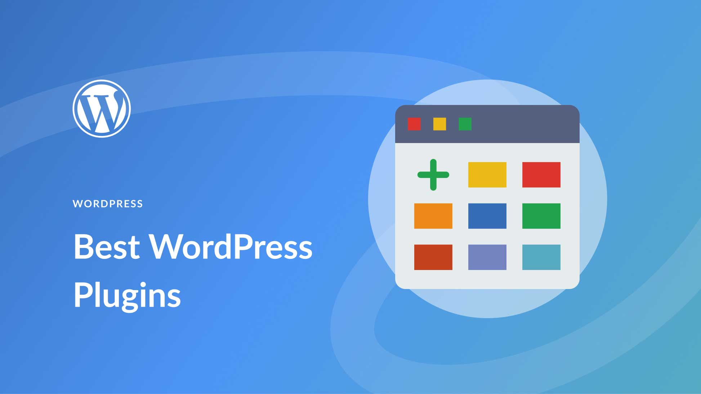

31 Best WordPress Plugins in 2023 (Everything You Need)
WordPress is the world’s most popular content management system (CMS), powering over 43% of all websites. With such a vast user base, many plugins are available to help you build the WordPress website of your dreams. In this post, we’ve compiled a definitive list of the absolute best WordPress plugins for your site.
What is a WordPress Plugin?
A WordPress plugin is software that adds specific features to a website. They help users customize and extend functionality without coding. Plugins are easy to install, with thousands available for free or purchase. Examples include adding social media buttons, optimizing site speed, creating forms, and managing backups.
What Types of WordPress Plugins Are Must-Haves?
While every WordPress site has specific needs, most (if not all) websites need a few plugins to be successful. Some popular choices include security, SEO, cache, backup, contact form, and social media plugins. These plugins can help optimize website performance, protect against security threats, and improve user engagement.
The Best WordPress Plugins
We considered several factors when researching the best WordPress plugins for our list. Firstly, we looked at the number of installs and reviews, as positive feedback indicates community approval. Secondly, we sought options that are regularly updated and compatible with the latest version of WordPress. Lastly, we prioritized security and checked that plugins were developed by reputable sources. Our list of the best WordPress plugins includes must-have plugins and great options for specific types of WordPress sites. With such a wide range of plugins available, there is something to meet every website’s unique needs. So, without further delay, let’s dive into our list of the best WordPress plugins.